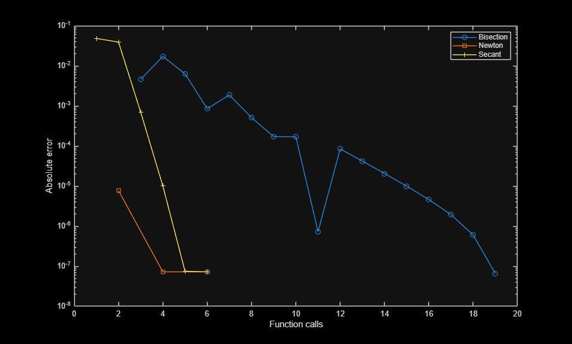
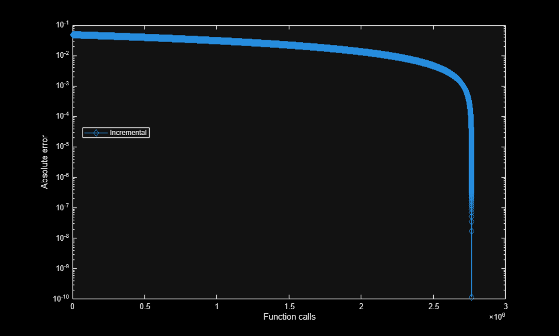

clear; close all; %Anonymous function and other variables delta = deg2rad(20); M = 3; f = @(theta) Shock_residual(delta, theta, M); fprime = @(theta) Shock_prime(theta,M); atol = deg2rad(1e-6); maxit = 100; trueWeak = deg2rad(37.76363); %Intervals weakInterval = [deg2rad(35),deg2rad(40)]; %Means For Newton-Raphson Weak = mean(weakInterval); %Weak Shock [weakBisection, infoBis] = bisection(f, fprime, weakInterval, atol, maxit); rad2deg(weakBisection); [weakIncremental, infoIncremental] = incremental_search(f, fprime, weakInterval, atol, maxit); rad2deg(weakIncremental); [weakSecant, infoSecant] = secant(f, fprime, weakInterval, atol, maxit); rad2deg(weakSecant); [weakNewton, infoNewton] = newton_raphson(f, fprime, Weak, atol, maxit); rad2deg(weakNewton); %Above code is from 1.5 figure semilogy(infoBis.history.funcCount, abs(infoBis.history.x - trueWeak), '-o') hold on semilogy(infoNewton.history.funcCount, abs(infoNewton.history.x - trueWeak), '-s') semilogy(infoSecant.history.funcCount, abs(infoSecant.history.x - trueWeak), '-+') xlabel('Function calls') ylabel('Absolute error') legend('Bisection', 'Newton', 'Secant', 'Location', 'best') figure semilogy(infoIncremental.history.funcCount, abs(infoIncremental.history.x - trueWeak), '-d') hold on xlabel('Function calls') ylabel('Absolute error') legend( 'Incremental', 'Location', 'best')

